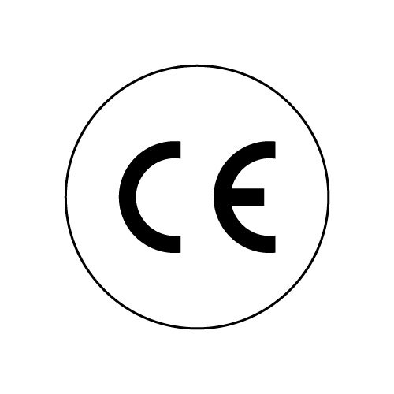

🎯 Exemple d'Étiquette Générée


Produit : FP8-RS/24V
Produit conforme aux exigences européennes en matière de sécurité (CE), de substances dangereuses (RoHS), et de recyclage des déchets électroniques (DEEE).